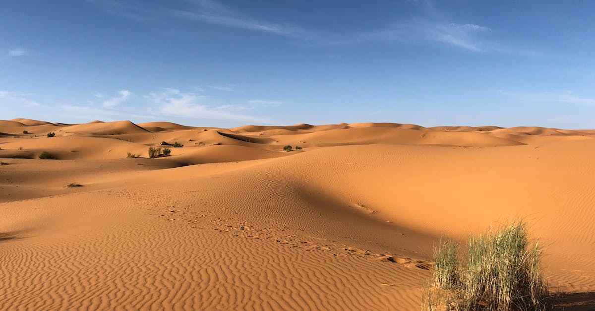
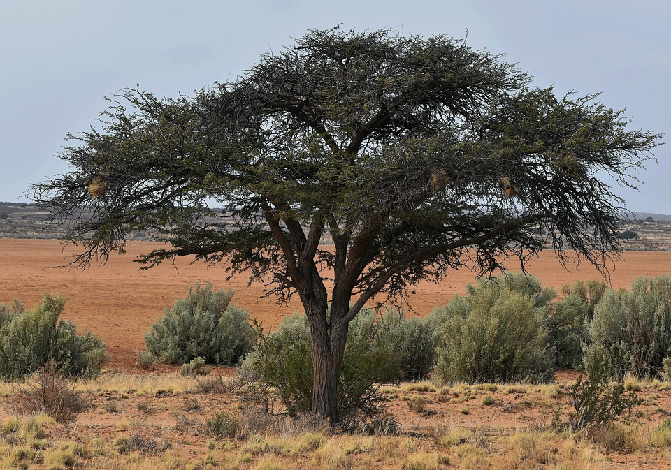
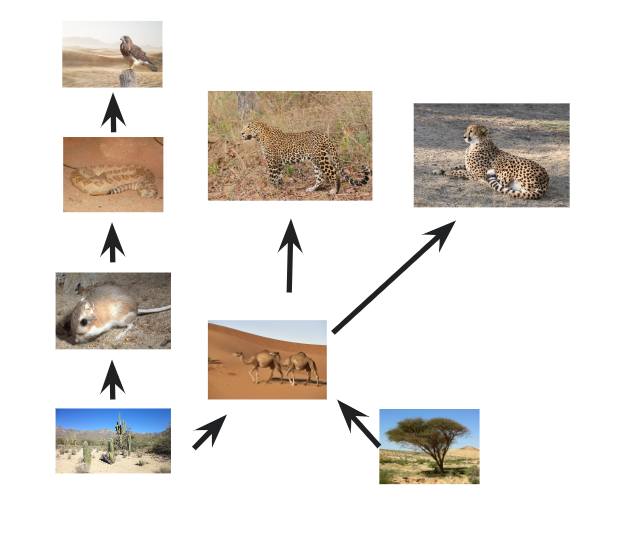

All About the Sahara Desert!
Introduction
The Sahara Desert is a very huge desert in North Africa, being the largest warm desert in the whole world. It has an area of around 3.6 million square miles. The name "Sahara" stems from the Arabic word of "desert".
Abiotic Factors
The average precipitation in the Sahara Desert is 100 to 250mm annually. The average temperature is a low of 86oF and with a high of 104oF. The Sahara Desert has little to no rain. The soil quality in the Sahara is poor, having very low water retention and low in organic matter.
Biotic Factors
Below will be lists of unique biotic factors in the Sahara Desert.
Flora
- Acacia Trees
- Palms
- Succulents
Fauna
- Pale Fox
- Addax
- Cheetah
Plant Adadptations: Cacti
The cactus plant has cool plant adaptations! Here are them (according to Succulent City)
- The white spines are made up of dead cells at a mature age. This means they don’t take up water as it would have been the case if they were alive.
- They trap air around the plant. This air provides a thin cover over the plant preventing water loss by evaporation and transpiration.
- The spines, with their numerous number, add up to provide a considerable amount of shade for the plant. Such an adaptation lowers the temperature of the cactus surface which further reduces water loss.
- In instances of fog/mist, the spines condense it into water droplets that fall off to the base of the plant where they are absorbed immediately.
Food Web!
Below is a food web representive of the Sahara Desert!
Works Cited
Sahara - Wikipedia. (2011, December 30). Sahara - Wikipedia. https://en.wikipedia.org/wiki/Sahara
Teacher’s Guide - Desert Soils | Soils 4 Teachers. (n.d.). Teacher’s Guide - Desert Soils | Soils 4 Teachers. https://www.soils4teachers.org/lessons-and-activities/teachers-guide/desert/
Some Cactus Adaptations That Make Them Invincible Under Severe Conditions. (2019, July 1). Succulent City. https://succulentcity.com/cactus-adaptations/

This work is licensed under a Creative Commons Attribution-ShareAlike 4.0 International License.